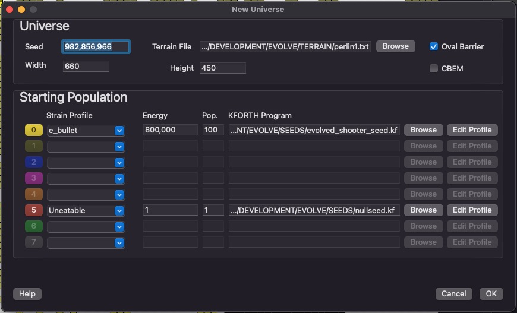
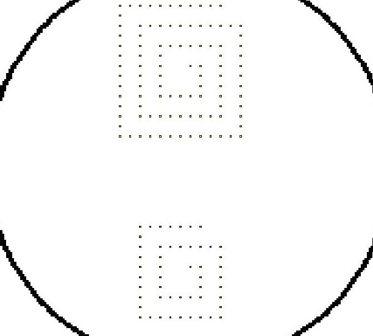

VOLVE 5.0
VOLVE 5.0
New Universe Dialog
This dialog is for creating a new universe/simulation.
Pick any old random value for the seed. By default the a new seed is selected by calling GetTickCount() from the operating system. But you can enter a value here. The seed can be used to reproduce a simulation (of course the other settings must also be the same).
You can select any width and height you wish (up to a maximum of 3000 units). You can leave the defaults 500 x 500 or, as shown here, use 700 x 500. The Oval Barrier option will create a pleasant enclosure for your universe (instead of a bare rectangle). This enclosure may be erased later and you can draw new barriers when the simulation window appears.
Terrain File
The terrain file is another simulation file which has barriers. Those barriers will be used to initialize the new universe created with this dialog. For example an hand drawn barrier pattern which you want to re-use can be saved as its own file, and supplied here.
The barriers in the terrain file will be scaled to fit the dimensions of the new universe (width x height).
The Evolve Batch utility can generate terrain from an image file using the pixel data to map to barriers. It will generate a minimal simulation file that can be supplied here for the terrain.
Starting Population
Here you specify the starting population. This consists of up to 8 "strains". Each strain is a starting organism which will not interbreed with the other strains. Its color and strain value will follow the creature, and its offspring for the lifetime of the simulation.
Unless you know how to write KFORTH programs, it will be best to select 'seed.kf' which is the starting program I use for all my simulations. This is text file which you can look at using the "KFORTH Interpreter".
Energy is an important value for controlling the population of your universe. The default (1,000,000) is kind of high, man. Values between 100,000 to 300,000 will give you a population of about 1,000 - 5,000 organisms. Here we have entered 150,000.
You can clear a strain row by selecting --blank-- from the strain profile combo box.
Oh, please note that commas are allowed inside of these edit controls. (Cool eh?)
Mutation Settings
Clicking on this button will bring up the Mutation Settings Dialog. This will allow you to configure the mutation probabilities. The defaults should be sufficient. This is the dialog that will appear:
Starting Locations
If your simulation consists of only 1 strain, then that organism will be placed in the center of the simulation grid. If 2 or more starting organisms are selected, they will be placed uniformly around the simulation grid.
This diagram shows 8 locations. This shows the placement when more than one strain has been specified. The first strain you specify will be placed in square 1. The second strain you specify will be placed in square 2. And so on... These numbers ARE not strain numbers. The placement is based on how many strains have been specified. The order is the to to bottom order in the dialog.
Competition Modes
Strains allow Evolve to be used for games. Three variants can be played are:
- Arena Bot Battle: Each strain is one of the competing bots (robots). One of the rules is that no bot can have MAKE-SPORE in its genetic code. This means bots will not be able to reproduce. The goal is to see which bot can kill the other bots. You run this kind of simulation until only one competitor remains.
- Army Hoard Bot Battle: Similar to regular bot battles, but the robots can multiply using the MAKE-SPORE instruction. Mutations are set to "0%", however. This means no evolution takes place. This allows you to design a genetic program which includes group behaviors and swarming tactics.
- Survival of the fittest: In this game mode, you run a simulation to see if your strain can outcompete other strains. You permit MAKE-SPORE, and mutations are enabled.
- Arcade Games: You can build simple 2D arcade games. By using the KEY-PRESS and MOUSE-POS instructions, you can craft programs and cells which respond to keyboard and mouse information. With this a primitive game can be written in which you roam around and shoot things.
Starting Populations
To create a strain with more than one organism, you can specify a number between 1 and 100 in the Population field (Pop.). Here is how the population will be initialized:
